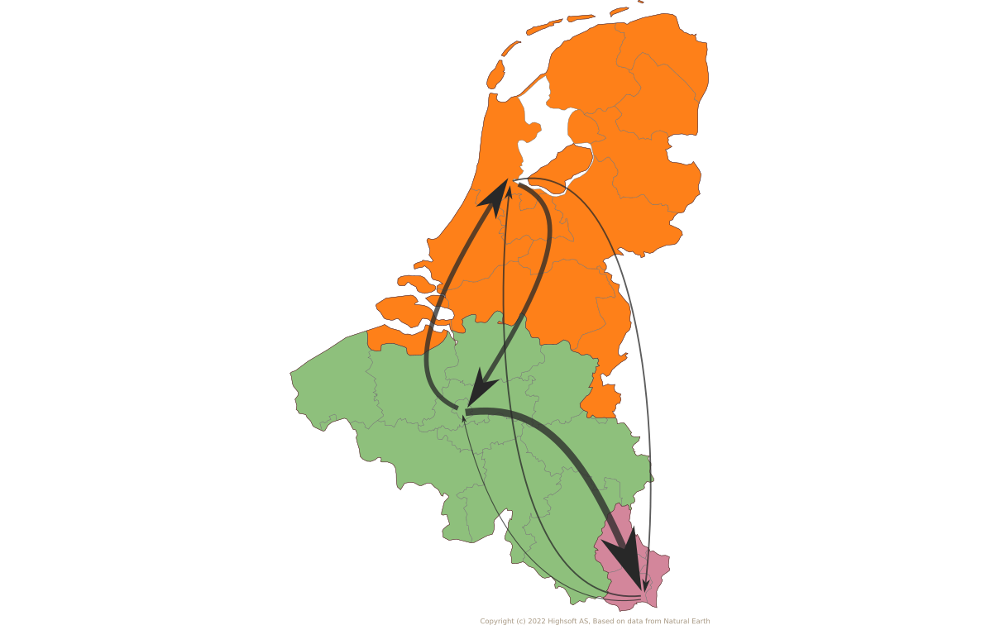
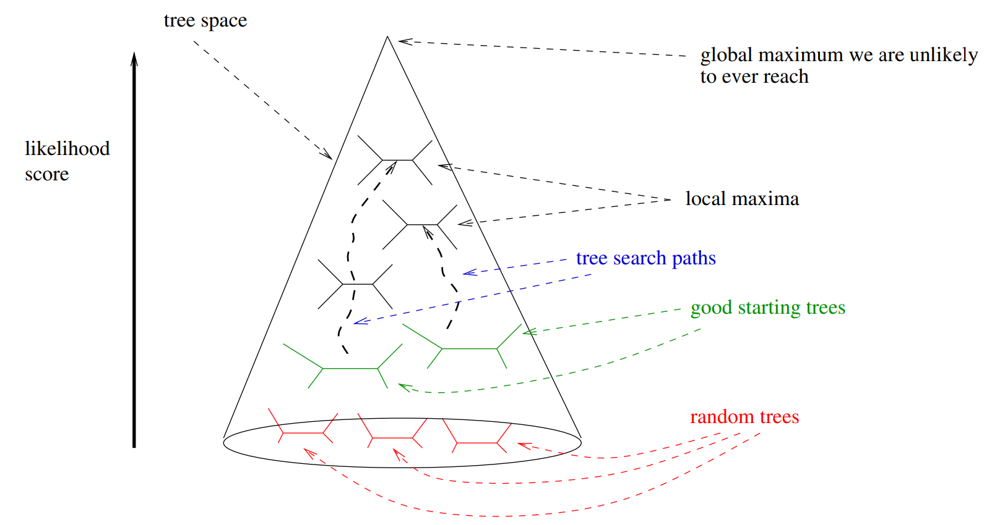
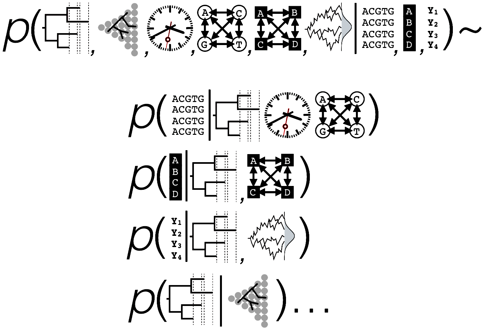
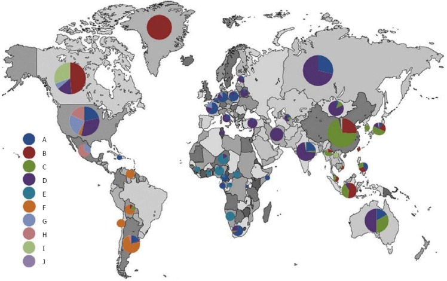
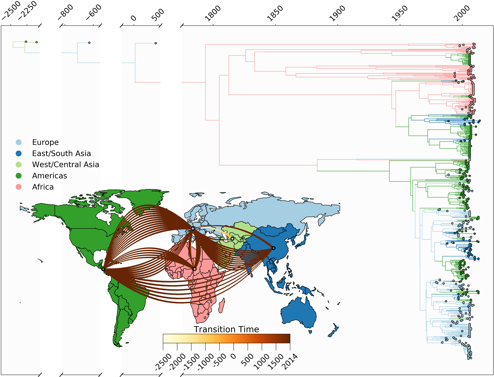
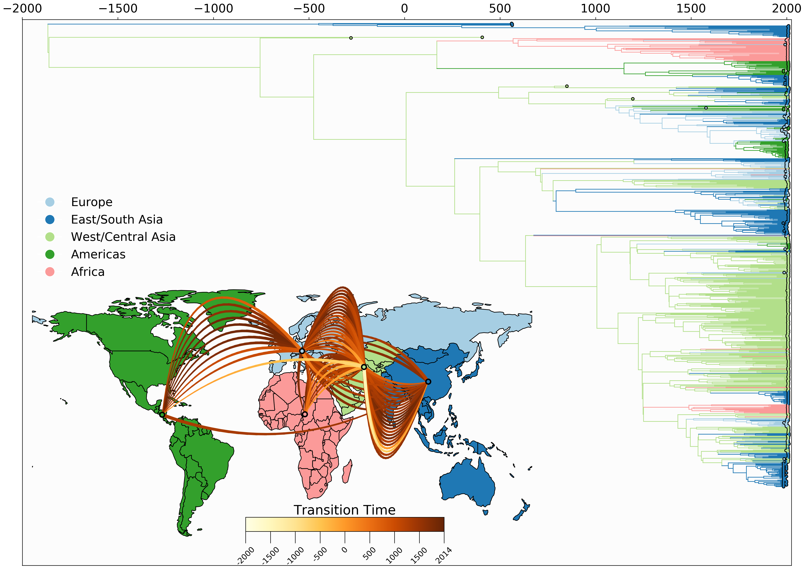
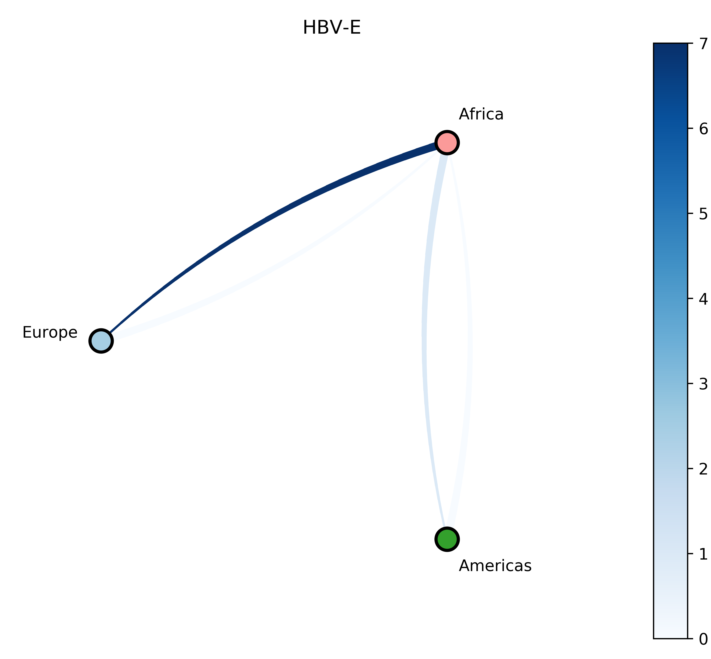
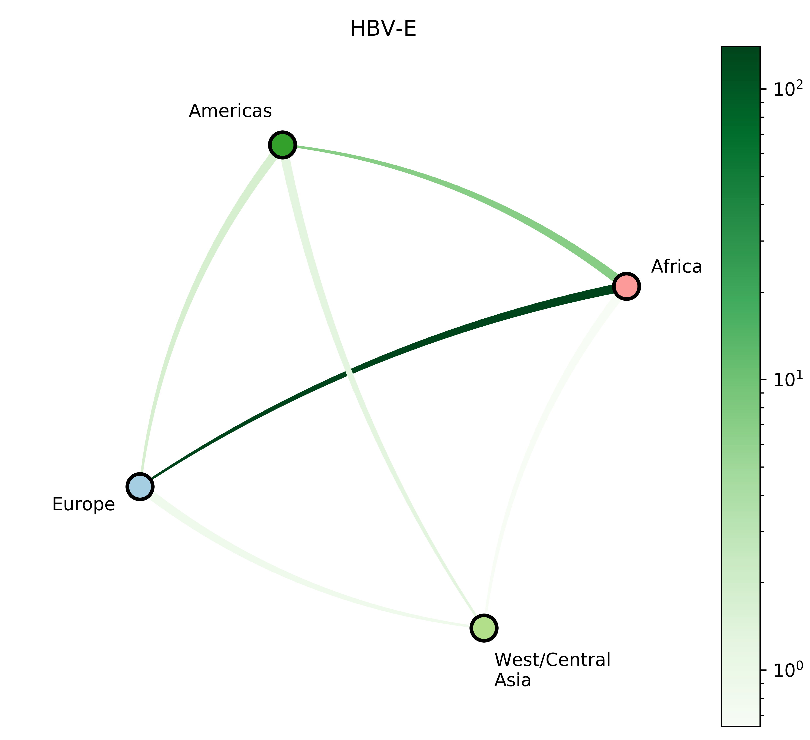

Human migration patterns shape hepatitis B diversity
Barney Isaksen Potter
KU Leuven
2022-12-21
Life Sciences Center, Vilnius University
What can phylogenetics tell us?
- Phylogeny
- Evolutionary rate
- Substitution rates
- Demographic parameters
- Migration rates
- Migration history
What can phylogenetics tell us?
- Phylogeny
- Evolutionary rate
- Substitution rates
- Demographic parameters
- Migration rates
- Migration history
What can phylogenetics tell us?
- Phylogeny
- Evolutionary rate
- Substitution rates
- Demographic parameters
- Migration rates
- Migration history
\[\tiny
Q_{JC69} =
\begin{bmatrix}
\cdot & \lambda & \lambda & \lambda \\
\lambda & \cdot & \lambda & \lambda \\
\lambda & \lambda & \cdot & \lambda \\
\lambda & \lambda & \lambda & \cdot \\
\end{bmatrix} \\[1em]
Q_{GTR} =
\begin{bmatrix}
\cdot & a\pi_C & b\pi_A & c\pi_G \\
a\pi_T & \cdot & d\pi_A & e\pi_G \\
b\pi_T & d\pi_C & \cdot & f\pi_G \\
c\pi_T & e\pi_C & f\pi_A & \cdot \\
\end{bmatrix}
\]
What can phylogenetics tell us?
- Phylogeny
- Evolutionary rate
- Substitution rates
- Demographic parameters
- Migration rates
- Migration history
What can phylogenetics tell us?
- Phylogeny
- Evolutionary rate
- Substitution rates
- Demographic parameters
- Migration rates
- Migration history

What can phylogenetics tell us?
- Phylogeny
- Evolutionary rate
- Substitution rates
- Demographic parameters
- Migration rates
- Migration history
How can we infer phylogenies robustly from genomic sequence data and geographic metadata?
Problem: parameter space size
\[\tiny
\begin{array}{cc}
Num.~taxa & Num.~topologies \\ \hline
1 & 1 \\
2 & 1 \\
3 & 3 \\
4 & 15 \\
5 & 105 \\
6 & 945 \\
7 & 10,395 \\
8 & 135,135 \\
9 & 2,027,025 \\
\vdots & \vdots \\
769 & 3.753 \times 10^{2,110}
\end{array}
\]

Source: Stamatakis & Kozlov (2020)
Enter: Bayes' Theorem
\[
P(\theta|\textbf{D}) = \frac{P(\textbf{D} |\theta) \times P(\theta )}{P(\textbf{D})}
\]



Source: Jin, Ju, & Jung (2019)


Source: CDC/ Dr. Erskine Palmer
What is HBV?
- Causative agent of hepatitis B
- Cirrhosis
- Hepatocellular carcinoma
- Spread through blood and bodily fluids
- Affects $\geq 350,000,000$ people annually
- Partially dsDNA genome
- Long strand: 3 kb
- Short strand: 2.2 kb
Source: Wikimedia Commons

Source: Morens & Fauci (2020)

Source: Kocher et al. (2021)

Source: Shi et al. (2013)
Our study
- 133 HBV positive individuals who have recently immigrated from sub-Saharan Africa
- 118 full genome sequences:
- 47 HBV-A;
- 7 HBV-D;
- 64 HBV-E.
- Supplemented with all available high quality GenBank HBV genomes
Reconstruct evolutionary and migration history of three HBV genotypes (A, D, E):
- Identify subgenotypes for novel sequences (A/D);
- Date the most recent common ancestor of each genotype;
- Characterize number and timing of major viral migrations.
Sampling bias complicates phyogeographic inference


Source: Mülemann et al. (2018)
\[\scriptsize
\begin{array}{cccc}
\textbf{Sequence} & \textbf{Genotype} & \textbf{Location} & \textbf{Age~(year)} \\ \hline
\textrm{Rise386} & \textrm{HBV-A} & \textrm{Russia}^* & 4,114 \textrm{(2100 BCE)} \\
\textrm{Rise387} & \textrm{HBV-A} & \textrm{Russia}^* & 4,278 \textrm{(2264 BCE)} \\
\textrm{DA119} & \textrm{HBV-A} & \textrm{Slovakia} & 1,563 \textrm{(451 CE)} \\
\textrm{DA195} & \textrm{HBV-A} & \textrm{Hungary} & 2,641 \textrm{(627 BCE)} \\ \hline
\textrm{DA27} & \textrm{HBV-D} & \textrm{Kazakhstan} & 1,610 \textrm{(409 CE)} \\
\textrm{DA29} & \textrm{HBV-D} & \textrm{Kazakhstan} & 822 \textrm{(1197 CE)} \\
\textrm{DA51} & \textrm{HBV-D} & \textrm{Kyrgyzstan} & 2,297 \textrm{(278 BCE)} \\
\textrm{DA222} & \textrm{HBV-D} & \textrm{Kazakhstan} & 1,167 \textrm{(852 CE)} \\
\textrm{NASD24SEQ} & \textrm{HBV-D} & \textrm{Italy} & 427 \textrm{(1587 CE)}
\end{array}
\]
Clock rate prior: $1.18 \times 10^{-5}$ [95% HPD: $8.04 \times 10^{-6} \textrm{--} 1.51 \times 10^{-5}$] subs./site/year
Source: Mülemann et al. (2018), Ross et al. (2018)
ML sequence placement

Bayesian phylogeography

Markov jump analysis
HBV-D new sequences

HBV-D evolutionary history

Markov jump analysis
HBV-E new sequences

HBV-E evolutionary history

Markov jump analysis


Takeaways and next steps
- Large-scale human movements may drive HBV globalization.
- Phylogeographic inference may be refined through joint inference with phylogeny.
- More global genomic surveillance of HBV is necessary to understand the diversity and potential impact of each genotype.
- Incorporation of more ancient genomes as they become available may refine inferences of future HBV datasets.
ECV-KU Leuven
- Guy Baele
- Mandev Gill
- Philippe Lemey
- Marijn Thijssen
- Samuel Hong
Fogarty International Center
Vilnius University
- Andrea Pineda-Peña
- Marijke Reynders
- Thomas Mina
- Carolina Alvarez
- Samad Amini-Bavil-Olayaee
- Frederik Nevens
- Piet Maes
- Marc Van Ranst
- Mahmoud Reza Pourkarim
Belgian American Education Foundation